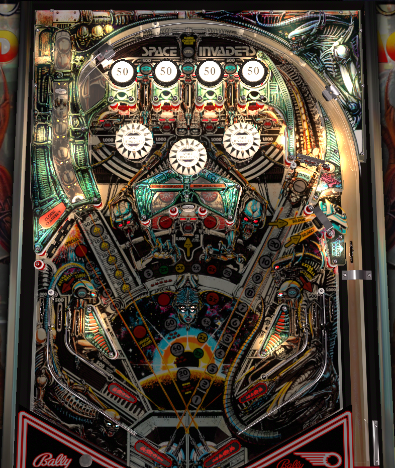

Space Invaders tempts players with a lot of features in its ultra-widebody layout, but strategy should be confined to shooting the center horseshoe for bonus and bonus multiplier, or the 1,000 point spinner on the right. The center top lane lights the spinner. The five targets labelled with red aliens contribute to a portion of bonus that carries over from ball to ball. Moderate points are available from the captive ball on the left and the center top lane when lit after all 3 top lanes have been scored.
The bumpers prominently labelled with the number 50 score 50 points, as you might expect. They are passive bumpers, meaning they do not actively flick or "pop" the ball away. Between the bumpers are three top lanes. Top lanes always score 500 points. Rolling through a lane with a lit blue alien collects that alien. Rolling through the center lane lights the spinner for 1,000 points per spin. Collecting all three top lanes, even over the course of the game, lights the center lane to score the captive ball value, explained later.
Can be set to score either 100 or 1,000 points.
There are 5 red aliens in the game: four standup targets in a horizontal line just above the bumpers, and the lone standup target in the center of the game between the horseshoe entrances. These targets all score 1,000 points. (Collecting all blue aliens once lights the lone center target for 5,000 points and 3 advances instead.) Hit a lit target to unlight it. Unlight all 5 aliens to add 20,000 points to the carryover end of ball bonus. The red alien carryover bonus maxes at 60,000 points; further completions of the five aliens score an instant Special. The number of times the red aliens have been completed is carried from ball to ball, but progress on the current set is not.
The three top lanes and two near in lanes form the set of 5 blue aliens. All blue alien lanes score 500 points. Roll through a lit lane to unlight it. Collecting the three top lane blue aliens lights the center top lane to score the captive ball value for the rest of the game. Collecting all 5 blue aliens lights one of the far in lanes for extra ball and lights the center standup target for 5,000 points and 3 bonus advance.
A hit to the captive ball must be strong enough to trigger the target in the back of the captive ball lane to count. Any hit to the captive ball scores 3 bonus advances. The first hit scores 10,000 points; subsequent hits are worth 10,000 more each time, up to a maximum of 50,000. This value is held from ball to ball and never resets. The center top lane also scores the captive ball value if the top three blue aliens have been collected.
The first four shots to the horseshoe score 5,000 points and increase the bonus multiplier (2x-3x-4x-5x). Horseshoe shots past the 4th alternate between scoring 25,000 points or 5,000 points and an instant special. There are two star rollovers within the horseshoe: only one of them needs to register to get credit for the shot, and there's a brief cooldown before they can be triggered again. It is possible, though, for a very slow horseshoe shot to stay in the structure long enough that both star rollovers trigger, giving credit for 2 shots at the price of 1. Both entrances to the horseshoe can be shot from any of the game's 4 flippers, and mastering the timing on the horseshoe shot- especially from the lower flippers- is well advised.
Each target down scores 500 points and a bonus advance. Completing the bank scores and advances the lit value: 10,000 - 15,000 - 20,000 - 25,000 - repeatable special. The drop targets themselves reset after every ball, but the value and number of completions is kept in memory.
The drop target scores 500 points and a bonus advance. Shooting the rollover switch behind the target scores a full collect of the bonus- red alien bonus plus standard bonus, times multiplier, and does not reset any value- and puts the ball back into the shooter lane for a replunge. Randomly, a siren noise will play. Hitting the right drop target or the bonus collect rollover- whichever is currently available- will score 50,000 points in addition to their normal award if they are hit while the siren noise is happening.
Space Invaders has two in lanes on each side. The near in lanes funnel the ball to upper mini-flippers. The far in lanes funnel the ball to the lower, regular size flippers. Near in lanes score 500 points and a bonus advance, and house two of the game's 5 aliens. Far in lanes score 500 points, or one of the lanes can be lit for an extra ball (or 25,000 points, if extra balls are off) by collecting the five blue aliens. Out lanes score 5,000 points.
Bonus is calculated as red alien bonus plus standard bonus, all times multiplier.
Red alien bonus can be 0, 20,000, 40,000, or 60,000, depending on whether the five red aliens have been collected 0, 1, 2, or 3+ times. The current red alien bonus is always carried between balls.
Standard bonus maxes out at 39,000 points. Bonus is advanced once by the horseshoe shot, any drop target, and the near in lanes. Bonus is advanced 3 times by a full hit to the captive ball (or the center top lane if it is lit for the captive ball value). If standard bonus ever reaches 20,000 points, then 20,000 will be held over from ball to ball. Bonus under 20,000 or any bonus in excess of 20,000 is discarded.
Bonus multiplier is advanced each time the ball traverses the center horseshoe up to a maximum of 5x. Bonus multiplier is never held from ball to ball.
Max bonus is 5x (60,000 + 39,000) = 495,000 points. Bonus can be collected mid-ball behind the right drop target as described two sections previous to this one.
In competition/novelty play, specials score 50,000 points and extra balls score 25,000 points.
Operators can determine whether bumpers score 100 or 1,000 points. This is not tied to whether the game is on 3-ball or 5-ball mode.
The blue aliens on the near in lanes can be tied together, so that collecting either one gives credit for both.
Progress on the current set of red aliens can be set to carry over in memory or reset any time the ball drains.
The center top lane, when lit for the captive ball value, can be set to either only score the captive ball value, or both score and advance it.
Qualifying extra ball can light both far in lanes, or just one alternating on slingshot hits.

All copyrighted names and terms in this document belong to their respective owners. The information provided in this document is for educational purposes only and no infringement is intended.
Back to top To game list To main page